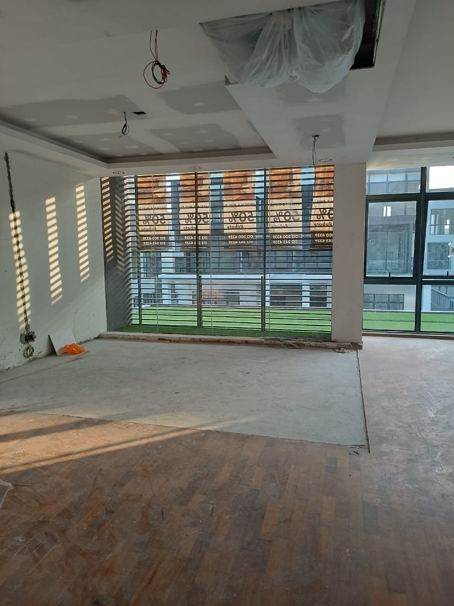
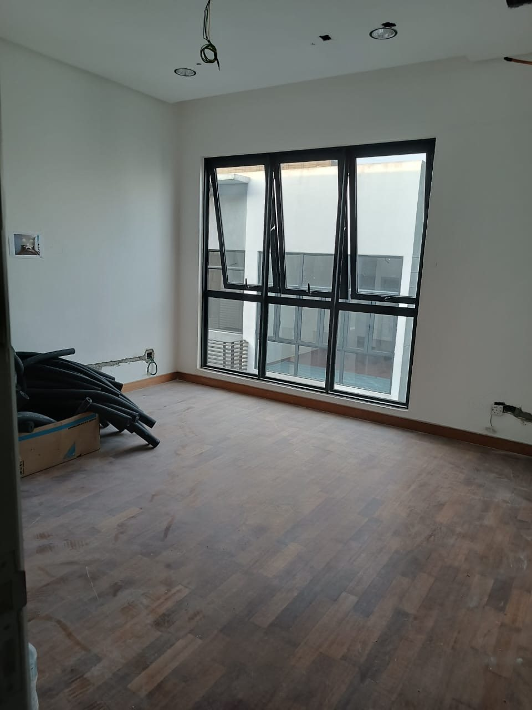
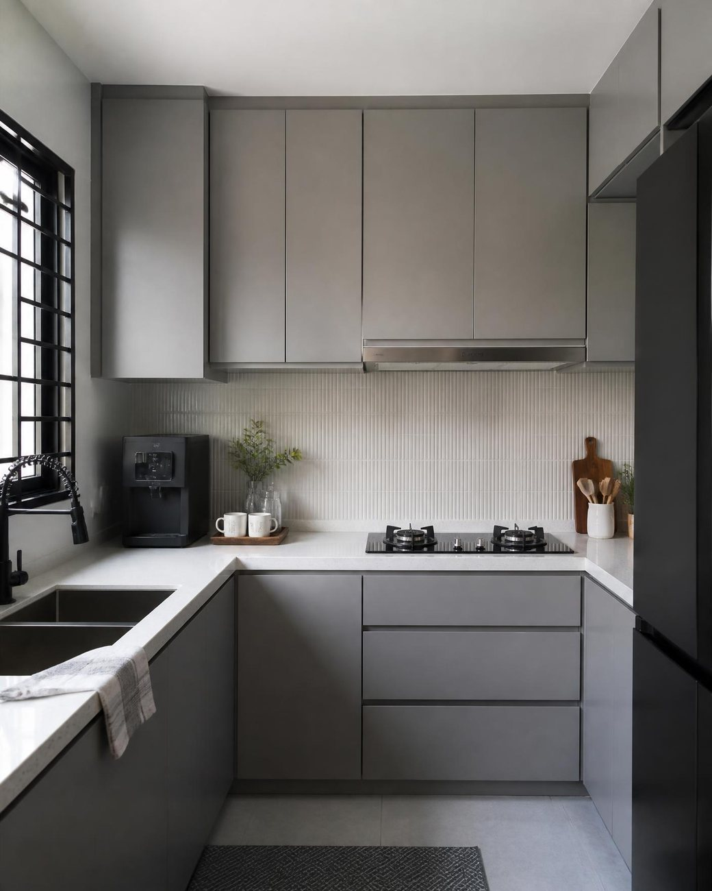
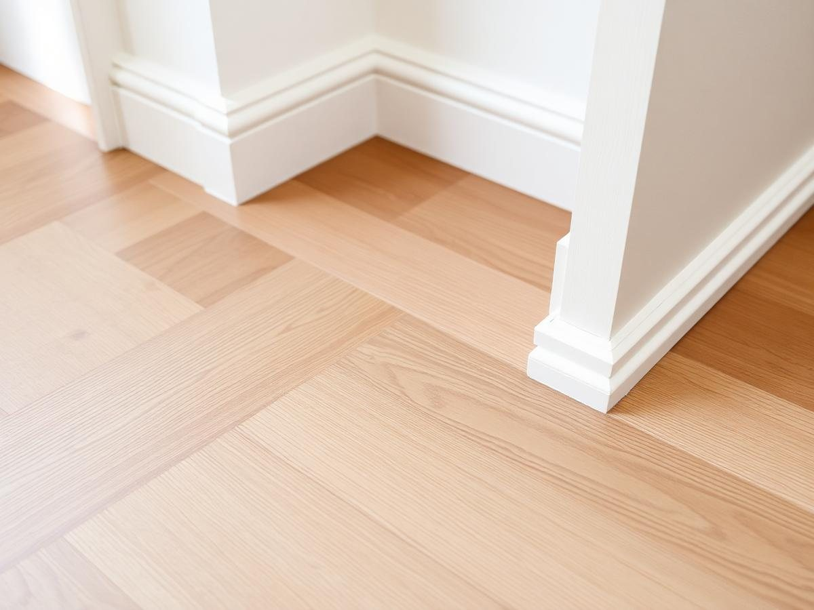
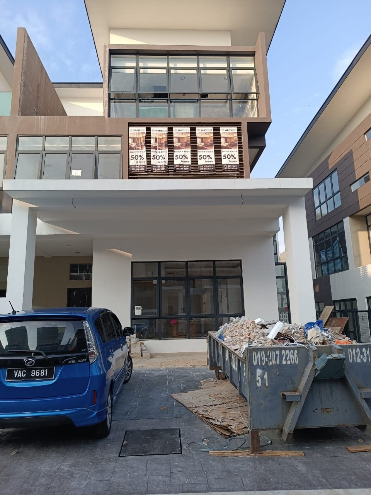
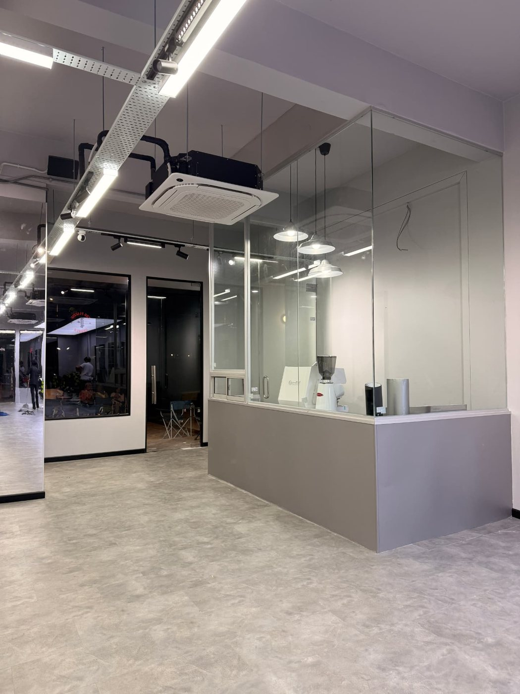
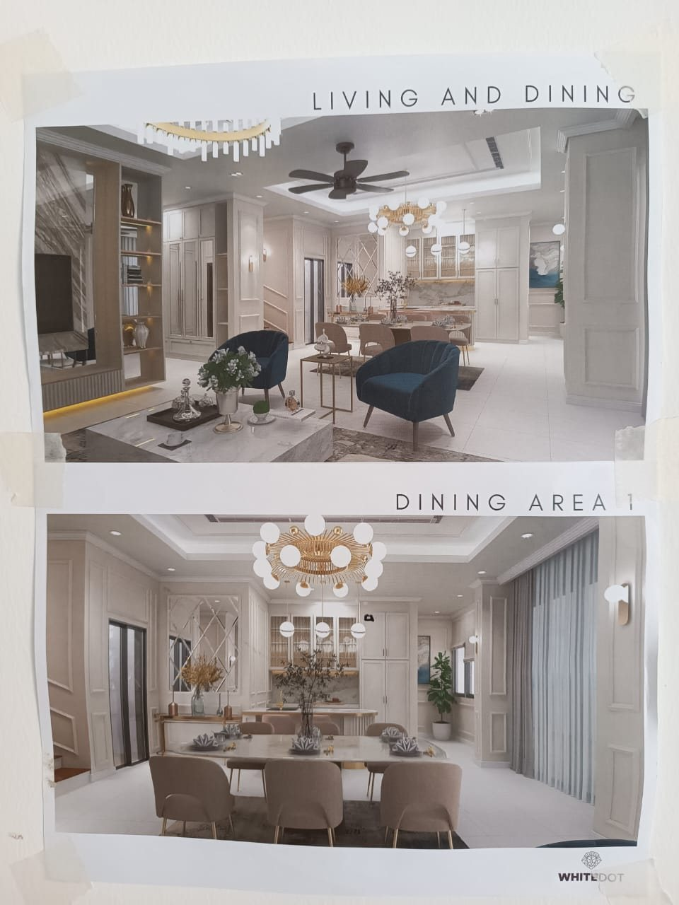

Ruang tamu
FotoA better space starts with the right work.
Whether you're renovating the whole house or improving specific parts of your space, Bina Haus handles the work with attention to detail from start to finish.
- 01Full house Renovation
Give your existing home a complete transformation and a fresh new feel.
- 02Kitchen renovations
Upgrade your kitchen into a space that works better for everyday living.
- 03Extension
Create the additional space you need within your existing property.
- 04Flooring
Refresh your space from the ground up with properly installed flooring.
- 05Plaster Ceiling
Give your interior a cleaner and more refined finish.
- 06Painting
Refresh the look and feel of your space with a new finish.
- 07Electrical & Plumbing
Essential electrical and plumbing works for your renovation project.



Dapur
FotoUpgrade your kitchen into a space that works better for everyday living.
Kitchen renovations are one of the works Bina Haus takes on, from a single run of cabinets to the whole room. The two tiles beside this note are the studio's own 3D renders of kitchen work — shown here as renders, not as photographs of a finished site.
Renovations · 02 Kitchen renovations



Butiran
FotoGive your interior a cleaner and more refined finish.
Where one material meets another is where a renovation is judged: the joint between floor and skirting, the line of a ceiling, the grain of a tile. Two of the owner's own videos cover exactly that work — flooring and skirting, and floor-and-wall tiling.
Renovations · 04 Flooring · 05 Plaster Ceiling · 06 Painting

Tapak
FotoBuilt for what comes next.
Whether you're building a new house, extending your existing property or carrying out structural works, Bina Haus takes your project from planning to completion.
- 01New house Constructions
Building your new home from the ground up.
- 02House Extension
Add the extra space your home needs as your needs grow.
- 03Structural Works
Structural works required for your construction project.



Cara Kami Kerja
Satu proses yang jelas, dari mula sampai siap.
A clear process from start to finish.
Five steps, the same on every project: consultation, site visit, quotation, construction, handover.
- 01
Consultation
We start by understanding what you need and the scope of your project.
- 02
Site Visit
Our team visits the site to assess the space and understand the work required.
- 03
Quotations
You receive a quotation based on the agreed scope of work.
- 04
Construction
Once everything is agreed, our team begins the work on site.
- 05
Handover
When the work is completed, we hand the finished project over to you.
Hasil Kerja
See the work for yourself.
A collection of work by Bina Haus.
Every tile below is the owner's own asset, taken from binahaus.com and served from this page: photographs, 3D renders and video, each labelled by what it is. Project names and locations are not invented — the owner's site publishes none.
FotoBangunan sedia ada, kerja luaran VideoUnit dalam kerja, kaca & pelindung FotoRuang dalaman, tingkap besar RenderDry Kitchen VideoUnit komersial, partition kaca FotoKerja luaran, scaffold 
FotoRuang dalaman, lantai kayu VideoJubin lantai 
RenderLiving and Dining 
FotoTapak kerja, kayu di lantai VideoPintu & dinding FotoRuang kosong, lantai kayu 
RenderWalk-in Wardrobe VideoKerja hacking & perobohan FotoKerja plaster, dinding bata RenderLiving Area VideoJubin lantai & dinding 
FotoRuang kosong, lantai kayu RenderKitchen VideoLantai & skirting
Media di atas ialah aset Bina Haus sendiri dari binahaus.com: gambar dan video kecil dihidangkan dari halaman ini, video besar dimainkan terus dari binahaus.com. Tiada nama, lokasi atau angka projek direka.

Pasukan
FotoWe build spaces for everyday life.
Bina Haus is a renovation and construction company serving homes, offices and commercial spaces.
Our work ranges from full house renovations and individual renovation works to new house construction, house extensions and structural works.
Whatever the scale of the project, our focus remains the same: Do the work properly. Keep the process clear. Deliver the space.
One team. One project. One responsibility.
Renovation and construction can involve many moving parts.
With Bina Haus, you have one team to communicate with throughout the project.
From consultation and site visit to construction and handover, you know who you're dealing with at every stage.
One project. One point of responsibility.
Ruang dibina dengan rasa
Because a space is more than walls, floors and finishes. It's where people live, work and spend their everyday lives.
So when we build or renovate a space, the work should feel considered from beginning to end.
Bina Haus. Ruang dibina dengan rasa.
Profil Syarikat
Everything the company publishes about itself, on one plate.
Read from binahaus.com on the day this preview was built. Nothing is filled in, estimated or invented: where the owner's own site publishes nothing, the line says so.
BINA HAUS — Ruang dibina dengan rasa
- Nama syarikat
- Bina HausSeperti yang dipaparkan di binahaus.com
- Bidang
- Renovation and constructionHomes, offices and commercial spaces
- Skop kerja — renovasi
- Full house renovation · Kitchen renovations · Extension · Flooring · Plaster ceiling · Painting · Electrical & plumbing7 jenis kerja, seperti di laman
- Skop kerja — pembinaan
- New house construction · House extension · Structural works3 jenis kerja, seperti di laman
- Proses
- Consultation → Site visit → Quotations → Construction → HandoverLima langkah yang sama pada setiap projek
- Cara kami bekerja
- One team. One project. One responsibility.Satu pasukan dari konsultasi sampai serah
- Hubungan
- WhatsApp +60 11-1124 4636
binahaus.comSatu-satunya saluran yang diterbitkan di laman - Alamat · E-mel · Pendaftaran
- Belum diterbitkanLaman binahaus.com tidak memaparkan alamat premis, e-mel rasmi atau nombor pendaftaran syarikat. Tidak diisi di sini supaya tiada butiran palsu.
Profil ini dibaca terus daripada binahaus.com. Kalau ada butiran yang patut muncul di laman (alamat, e-mel, nombor pendaftaran, tahun mula, kawasan perkhidmatan), beritahu sahaja — ia akan masuk ke plat ini sebagai fakta, bukan anggaran.
Planning to renovate your space?
Tell us what you need and let's start with a conversation.